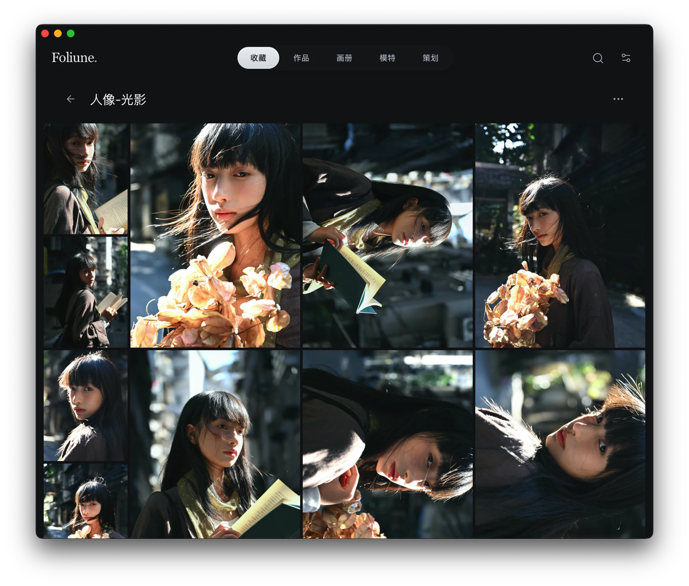
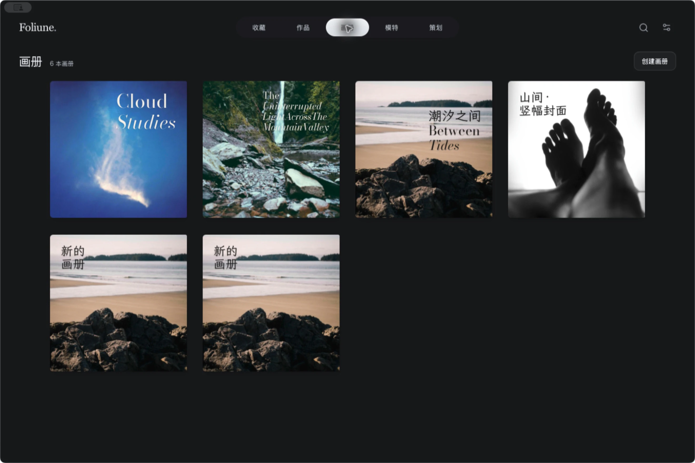
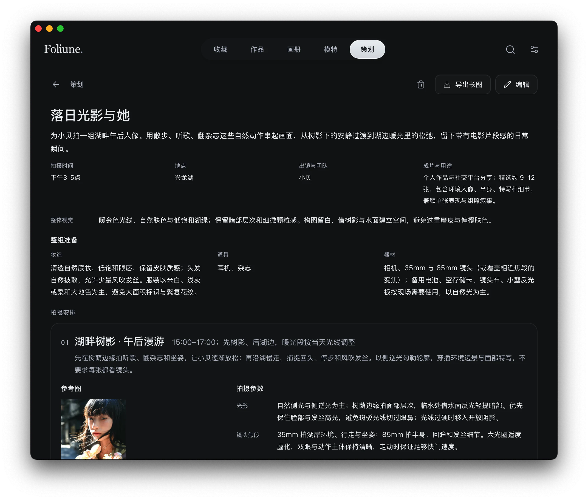

把照片编成画册
从相簿挑出想放在一起的照片，先自动排版，再慢慢调整章节和跨页。画册可以导出为独立 HTML 文件，分享给别人翻看。

为下一次拍摄做准备
把参考图、场景、妆造和镜头清单放进同一份策划。出发前导出一张长图，到现场用手机查看。

更多功能
-
图库整理
用全局搜索查找内容，为照片添加标签、笔记和区域标注。
-
照片导入
从本地文件、作品目录或支持的小红书与 Instagram 图片帖子导入照片。
-
全屏欣赏
按顺序或随机播放照片，也可选用本地音乐。
-
模特档案
把模特资料和样片放在一起，方便回看以往的拍摄。
-
拼图与发布预览
将选片排成拼图并导出 PNG，或预览社交帖子的图文排版。
-
图库备份
用 ZIP 备份和恢复图库，外部原件需单独备份。
下载 Foliune
macOS Apple Silicon
安装与签名要求见 GitHub 发布页。